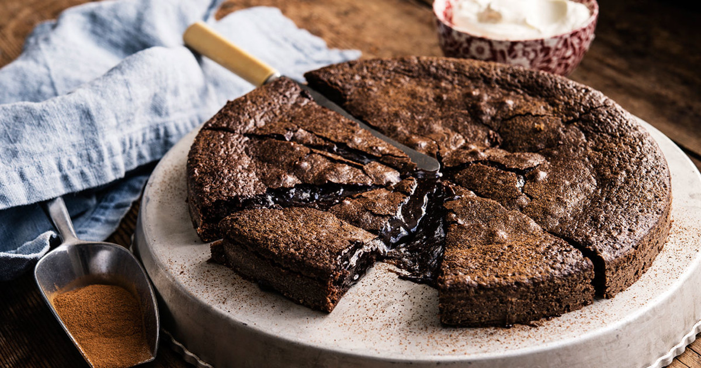

| 1 | 100g smör |
| 2 | 2 ägg | 3 | 2 1/2 dl strösocker |
| 4 | 3 msk kakao |
| 5 | 2 tsk vaniljsocker |
| 6 | 1 1/2 dl vetemjöl |
| 7 | 1 krm salt |
Gör så här
- Sätt ugnen på 200°C, under- och övervärme.
- Smörj och bröa en form med löstagbar kant eller spänn fast ett bakplåtspapper på botten.
- Smält smöret i kastrull, låt svalna något.
- Vispa ihop ägg och socker (använd inte en elvisp).
- Blanda kakao, vaniljsocker, vetemjöl och salt i en bunke och rör ner i äggblandningen.
- Tillsätt det smälta smöret och blanda försiktigt ihop till en jämn smet och häll sedan över smeten i formen.
- Grädda mitt i ugnen i ca 10-15 minuter
- Ta ut kladdkakan och låt svalna.
- Serveras med grädde eller färska bär